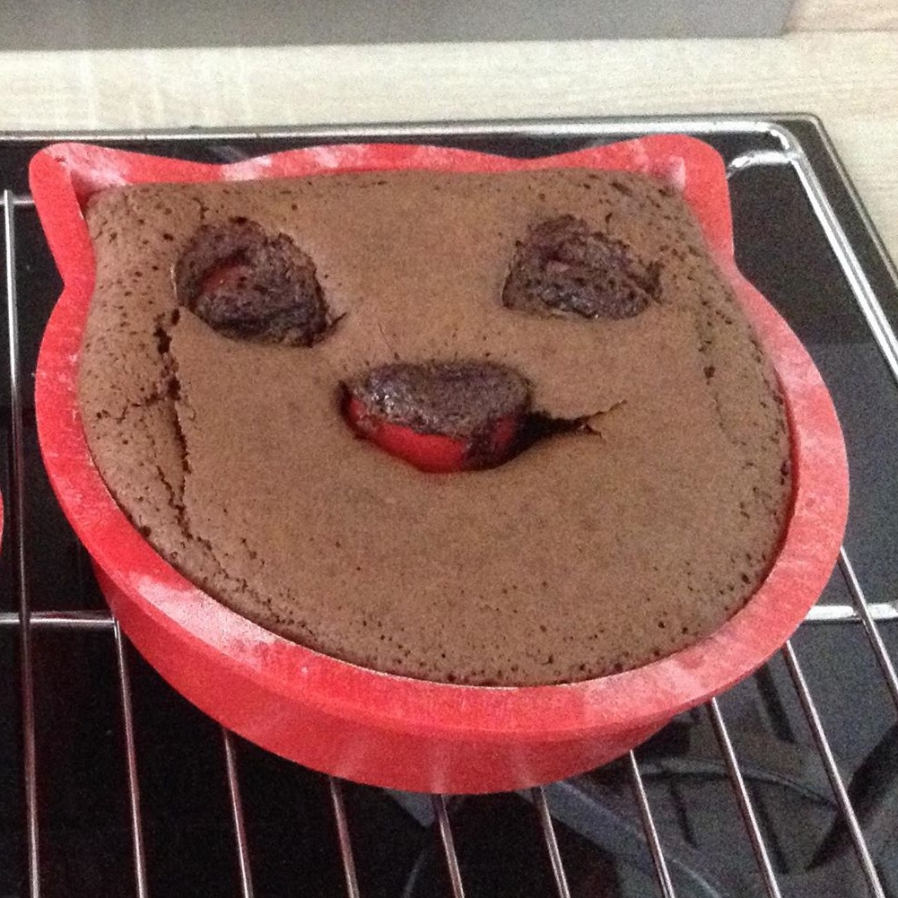

Gâteau au chocolat

Informations
Difficulté :
Prix :
Temps :
Nombre de personnes :
Ingrédients
- 4 oeufs
- 150 g de beurre
- 200 g de chocolat
- 80 g de farine
- 150 g de sucre
- 1 cuillère è café de levure
Étapes
- Prechauffez le four à 180°C.
- Mettre le chocolat et le beurre à fondre.
- Ajoutez les oeufs, la farine, le sucre, la levure et mélangez.
- Versez la préparation dans un moule beurré et fariné.
- Enfournez à 180°C pendant 25 minutes.